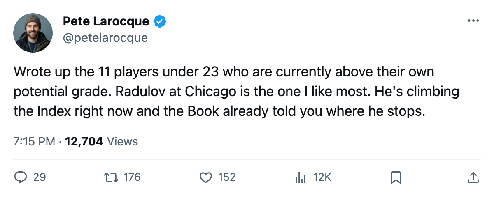
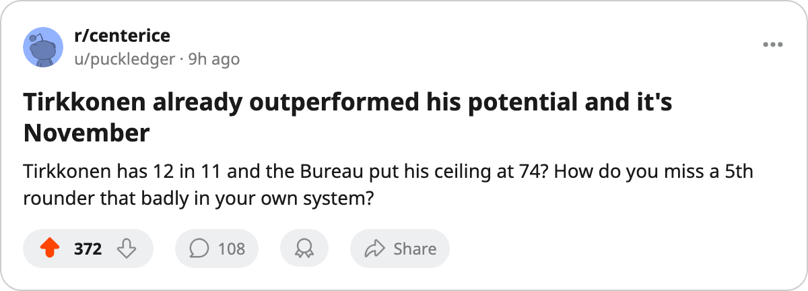

MIN
MIN BUF
BUFEleven Under 23 Sit Above Their Own Potential. The Bureau's Ceiling Doesn't Move.
The Development Index pushed Igor Radulov to 80. The Book printed 78. He's not alone.
 Pete LarocqueScouting editor · The Prospect File
Pete LarocqueScouting editor · The Prospect FileThe Development Index has pushed 11 players under 23 past the potential grade the Bureau printed for them. The smallest gap is 1 point. The largest is 26.
Potential is the Book's likelihood of development, not a ceiling that resets when a player outgrows it. When form lifts a man's current overall above his potential, the system reads him as better right now than it says he will ever be. The Bureau never revises the potential number.
The riser who broke his own number
Igor Radulov76 sits at +11 on the Development Index, tied with  Marian Gaborik99 and Shaone Morrisonn74 for second place behind
Marian Gaborik99 and Shaone Morrisonn74 for second place behind  Vaclav Nedorost83. His base overall is 71. His current overall is 80. His potential is 78.
Vaclav Nedorost83. His base overall is 71. His current overall is 80. His potential is 78.
He is 2 points past the best the scouts predicted, at 23, in his fifth professional season, on a club that is 6-17-7 and dead last in the Central. Radulov has 15 points in 32 games at 19.0 minutes a night for  Chicago Blackhawks. He was the 74th pick in 2000.
Chicago Blackhawks. He was the 74th pick in 2000.
He is the only player under 23 on Chicago's roster who appears in the Bureau's top 40 by overall at any position. Torsten Schmitt67, taken 17th overall in 2004, carries an overall of 71 and has no games recorded this season. The Blackhawks hold 5 picks and 1 first for June, and they will likely add a high selection to that pile.
The per-game outlier
Mika Tirkkonen75 has 12 points in 11 games for  New York Islanders. He was the 134th pick in 2005, a 5th-round selection. His overall is 75. His potential is 74.
New York Islanders. He was the 134th pick in 2005, a 5th-round selection. His overall is 75. His potential is 74.
The gap is 1 point, the smallest on the list. A 5th-rounder in his first 11 NHL games already has a current grade that exceeds the ceiling the scouts printed. Josh Sim75 leads the 2005 class in total points with 15 in 28 games. Sim's own overall of 75 sits 3 points above his potential of 72.
The 26-point reversal
Karel Duba77 has the largest gap in the league: overall 77, potential 51, a swing of 26 points. He was the 3rd pick of the 2004 draft. He has 14 points in 31 games at  Los Angeles Kings and his form is +7.
Los Angeles Kings and his form is +7.
The Bureau looked at the 3rd overall pick in last June's draft and concluded his career peaks at 51. He is currently 26 points above that number. The same club that drafted him holds 5 picks and 1 first for June, so this is not a problem they can solve by waiting.
Fredrik Sillanpaa71 at  Calgary Flames sits 21 points above his own potential (77 overall, 56 potential), drafted 122nd overall in 2005. Tuomo Pihlman76, last season's Calder winner, is 20 points above his (76 overall, 56 potential). Francois Anderson76, the 11th pick in 2005, is 19 points above his (78 overall, 59 potential), though he has appeared in 1 game.
Calgary Flames sits 21 points above his own potential (77 overall, 56 potential), drafted 122nd overall in 2005. Tuomo Pihlman76, last season's Calder winner, is 20 points above his (76 overall, 56 potential). Francois Anderson76, the 11th pick in 2005, is 19 points above his (78 overall, 59 potential), though he has appeared in 1 game.
These four carry the biggest reversals on the list, three of them rookies, all showing up 19-26 points above what the scouts projected.
What the list tells you
The full table, sorted by gap:
| player | team | overall | potential | gap | age | draft | GP | pts |
|---|---|---|---|---|---|---|---|---|
| Karel Duba | LA | 77 | 51 | +26 | 20 | 2004 #3 | 31 | 14 |
| Fredrik Sillanpaa | CGY | 77 | 56 | +21 | 20 | 2005 #122 | 25 | 7 |
| Tuomo Pihlman | MIN | 76 | 56 | +20 | 21 | 2004 #9 | 29 | 34 |
| Francois Anderson | BUF | 78 | 59 | +19 | 20 | 2005 #11 | 1 | — |
| Karel Hemsky77 | NSH | 77 | 64 | +13 | 20 | 2005 #54 | 17 | 4 |
| Marian Gaborik | TOR | 99 | 90 | +9 | 23 | 2000 #3 | 17 | 8 |
| Samu Uhlback76 | DET | 77 | 70 | +7 | 20 | 2005 #138 | 25 | 7 |
 Ilya Kovalchuk92 Ilya Kovalchuk92 | ATL | 92 | 85 | +7 | 22 | 2001 #1 | 31 | 36 |
| Josh Sim | NJ | 75 | 72 | +3 | 20 | 2005 #119 | 28 | 15 |
| Igor Radulov | CHI | 80 | 78 | +2 | 23 | 2000 #74 | 32 | 15 |
| Mika Tirkkonen | NYI | 75 | 74 | +1 | 20 | 2005 #134 | 11 | 12 |
Eight of the eleven were drafted in 2004 or 2005. The Bureau's potential grades for the two most recent drafts are systematically too low, and the men who prove it are already playing NHL minutes.

